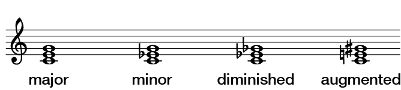

Musicianship Resources
Triads and seventh chords
A chord is any combination of three or more pitch classes that sound simultaneously.
A three-note chord whose pitch classes can be arranged as thirds is called a triad.
To tell whether or not a chord is a triad, take the pitch classes present in the chord. Assuming there are three pitch classes (not necessarily three pitches), arrange them on the circle of generic scale steps. (By generic, I mean that A-natural, A-flat, and A-sharp are all kinds of A.)

If the three pitch classes are distributed as above, with two intervals skipping one pitch class and with one interval skipping two pitch classes, the chord is a triad. (There are a few exceptions to this rule, but they rarely appear in Western music, so don’t worry about them for now.)
A circle of thirds makes things even clearer, as the pitch classes of a triad will always sit next to each other.

Identifying and labeling triads
Triads are identified according to their root and quality.
Triad roots
To find a triad’s root, arrange the pitch classes on a circle of thirds (mentally or on paper). When you arrange the pitch classes on the circle of thirds, the root is the lowest pitch-class of the three-pitch-class clump. Expressed another way, if the circle ascends by thirds as it moves clockwise, the root is the “earliest” note (thinking like a literal clock), and the other pitch classes come “later.”

Once you know the root, you can identify the other notes as the third of the chord (a third above the root) and the fifth of the chord (a fifth above the root). The third of the chord is the pitch class that is a third higher than the root. The fifth of the chord is the pitch class that is a fifth higher than the root.
Triad qualities
To find a triad’s quality, identify the diatonic interval between the root and the other members of the chord. There are four qualities of triads that appear in major and minor scales, each with their own characteristic intervals.
- major triad: M3 and P5 above the root
- minor triad: m3 and P5 above the root
- diminished triad: m3 and d5 above the root
- augmented triad: M3 and A5 above the root

Lead-sheet symbols
A triad can be summed up by a single symbol, such as a lead-sheet chord symbol. A lead sheet symbol includes information about both root quality, as well as which pitch class occurs in the lowest voice (called the bass regardless of who is singing or playing that pitch).
A lead-sheet symbol begins with a capital letter (and, if necessary, an accidental) denoting the root of the chord. That letter is followed by information about a chord’s quality:
- major triad: no quality symbol is added
- minor triad: lower-case “m”
- diminished triad: lower-case “dim” or a degree sign “°”
- augmented triad: lower-case “aug” or a plus sign “+”
Finally, if a pitch class other than the chord root is the lowest note in the chord, a slash is added, followed by a capital letter denoting the pitch class in the bass (lowest) voice.
A C-major triad’s lead-sheet symbol is simply C. A C-minor triad is Cm. A D-sharp-diminished triad with an F-sharp in the bass is D#dim/F#. And so on.

Roman numerals
Chords can be labeled according to their function within a key. One system for doing so uses Roman numerals to designate the scale degree of the chord’s root. For example, in the key of C major, a C-major chord would be labeled “I,” a D-minor chord “II,” E-minor “III,” and so on. In G minor, an A-diminished triad would be labeled “II,” F-major “VI,” etc. Always use capital Roman numerals. In general, Roman numerals will be labeled below the score.
In major keys, chords with the same Roman numeral are made up of the same scale-degrees (using the same solfège syllables), and they have the same quality. In other words, triads labeled “I” in any major key will be major triads containing do, mi, and sol. III triads will be minor triads containing mi, sol, and ti, etc. The same is true for minor keys (though I in minor is different from I in major).
Following are the qualities and scale-degrees belonging to each triad in every major key:
- I: major – do, mi, sol
- II: minor – re, fa, la
- III: minor – mi, sol, ti
- IV: major – fa, la, do
- V: major – sol, ti, re
- VI: minor – la, do, mi
- VII: diminished – ti, re, fa
Following are the qualities and scale-degrees belonging to each triad in every minor key:
- I: minor – do, me, sol
- II: diminished – re, fa, le
- III: major – me, sol, te
- IV: minor – fa, le, do
- V: major – sol, ti, re
- VI: major – le, do, me
- bVII: major – te, re, fa
- VII: diminished – ti, re, fa
Building a triad
To build a triad on the staff, identify the root, quality, and bass note from the lead-sheet symbol. The root and quality will tell you what three pitch classes belong to the triad. For example, Caug tells you the root is C, and the quality is augmented. Since the quality is augmented, there is a major third above the root (E) and an augmented fifth above the root (G-sharp). Since there is no bass note appended to the lead-sheet symbol, the bass note is the same as the root: C. Write a C on the staff (in any comfortable register), then write the other chord tones (E and G-sharp) above the C (see the Caug triad in the above figure).
For Cm/Eb, the root is C, and the quality is minor. Since the quality is minor, there is a minor third above the root (E-flat) and a perfect fifth above the root (G). The slash identifies E-flat as the bass note. Write the E-flat on the staff. Then write a C and a G above it to complete the chord (again, see above).
When all the members of the triad are as close to the bass note as they can be, the chord is in what is called close position (C, Cm/Eb, and Cdim/Gb above). When there are spaces between chord tones, the chord is in open position (Caug above). (In certain musical situations, only one of those positions will be useful or desirable.)
Listening to triads
Each triad quality has its own distinct sound, and to an extent that sound is preserved even when the chord is inverted (when the pitch classes are arranged so that a pitch class other than the root is in the lowest voice). As you practice identifying and writing triads, be sure to play the triads, both to check your analysis/writing and to develop the ability to identify chord qualities quickly by ear.
Seventh chords
A four-note chord whose pitch classes can be arranged as thirds is called a seventh chord.
Like with a triad, the pitch classes belonging to a seventh chord occupy adjacent positions (a four-pitch-class clump) on the circle of thirds. The four members of a seventh chord are the root, third, fifth, and seventh.

There are five qualities of seventh chords that appear in diatonic music: major seventh, dominant seventh, minor seventh, diminished seventh (also called fully-diminished), and half-diminished seventh. They are comprised of the following intervals above their roots:
- major seventh: M3, P5, and M7 above the root (or major triad with a major seventh)
- dominant seventh: M3, P5, and m7 above the root (or major triad with a minor seventh)
- minor seventh: m3, P5, and m7 above the root (or minor triad with a minor seventh)
- diminished seventh: m3, d5, and d7 above the root (or diminished triad with a diminished seventh)
- half-diminished seventh: m3, d5, and m7 above the root (or diminished triad with a minor seventh)
Following are the lead-sheet abbreviations for seventh-chord qualities:
- major seventh: maj7 or △7 (Gmaj7 or G△7)
- dominant seventh: 7 (B7)
- minor seventh: m7 (F#m7)
- diminished seventh: dim7 or °7 (Ddim7 or D°7)
- half-diminished seventh: half7 or ⦰7 (Ahalf7 or A⦰7)
Roman numerals
Following are the qualities and scale-degrees belonging to each seventh chord in every major key:
- I: major seventh – do, mi, sol, ti
- II: minor seventh – re, fa, la, do
- III: minor seventh – mi, sol, ti, re
- IV: major seventh – fa, la, do, mi
- V: dominant seventh – sol, ti, re, fa
- VI: minor seventh – la, do, mi, sol
- VII: half-diminished seventh – ti, re, fa, la
Following are the qualities and scale-degrees belonging to each seventh chord in every minor key:
- I: minor seventh – do, me, sol, te
- II: half-diminished seventh – re, fa, le, do
- III: major seventh – me, sol, te, re
- IV: minor seventh – fa, le, do, me
- V: dominant seventh – sol, ti, re, fa
- VI: major seventh – le, do, me, sol
- bVII: dominant seventh – te, re, fa, le
- VII: half-diminished seventh – ti, re, fa, le